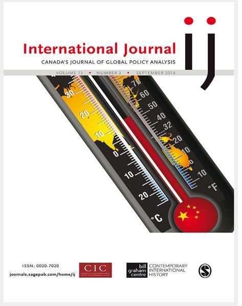

收录于合集

简 介
【作者简介】 亚伦·艾丁格（ Aaron Ettinger），来自加拿大的滑铁卢大学政治科学系，研究兴趣为国际关系、国际政治经济学和美国对外政策。
【编译】 杨艺华
【校对】 李代霓
【来源】 International Journal 2018, Vol. 73(3) ，p474–483
【期刊简介】

International Journal 是加拿大杰出的全球政策分析期刊。它将简短的、与政策相关的文章，以及加拿大和世界各地的外交政策制定者、分析人士和学者感兴趣的更长的、经过同行评议的学术评估。
【期刊网址】
【核心观点】 特朗普2017年的《国家安全战略》承诺要实现“美国第一”。然而，它部分背离了传统，并表现出了特朗普外交政策的严重的不连贯性。《国家安全战略》试图将两种不相容的世界观合并成一个单一的学说：特朗普的“美国第一”民族主义，以及存在于美国外交政策建制派70年之久的国际主义共识。它不仅泄露了战略失调，还预示着特朗普反叛的民族主义与美国外交政策机构的传统主义之间不可能存在合作关系。
【论证过程 】作者通过以下三个部分对核心观点进行了论证。
****一、 特朗普的国家安全战略重要吗?
（1） 作为战略性文件的《国家安全战略》，使得历来只存在于只言片语中的特朗普的世界观变得清晰。 重要的是， 特朗普的世界观与 美国外交政策的长期准则 背道而驰 。特朗普的国家安全战略拒绝了奥巴马的国际主义、布什的转型议程和克林顿的全球主义，而是 承诺 保持 美国的 首要地位 和 解除多边义务对美国的约束。
（ 2） 《国家安全战略》为广大的美国对外政策机构建立了一个普遍性的框架原则。 这样做有以下好处：首先，它确立了主要的假设和优先事项。其次，它为制定文件的决策者提供了方向，并在发生意外危机时为其提供指导。第三，它帮助机构将有限的资源集中于优先事项。第四，它是贯穿美国外交政策的共同主线，是衡量外交政策成功与否的基准。（例如，2017年的国家安全战略有着最强烈的对自由贸易的敌意，想要实现朝鲜半岛无核化，并拒绝接受2015年的伊朗核协议。而这些领域正是特朗普前十八个月外交政策的核心。）最后，它公开表明了美国外交政策的新参数，国内观众（特别是国防部和国务院）明白了冷战不可能再发生，国外观众明白了他们国家和美国的关系将没有以前那样友好。
(3) 《国家安全战略》 之所以重要 ， 是因为它让特朗普民族主义者与外交政策建制派对立 。
这份文件可能会有总统的签名，但 它 所反映的远不止总统。它反映了美国庞大的外交政策机构的利益和影响力，这些机构包括白宫、国防部、国务院、国土安全部、能源 部 、财政部、商务部、卫生和公共服务部、情报机构和国会委员会。
以往颁布的《国家安全战略》 将这些相互竞争的影响集中在一个方向上。但特朗普及其最亲密盟友的 顽固 民族主义尤其强大，足以削弱他的政府中 微弱的 建制派声音 。 因此， 2017年 的《国家安全战略》具有内在矛盾性 就不足为奇了。 在这份文件中，有时候特朗普的民族主义占上风，而有些段落则属于建制主义的观点，甚至有一些段落对特朗普的政治生存不利:即提到俄罗斯的网络和错误信息宣传活动。也许最能说明现状集团影响是这份《国家安全战略》对俄罗斯的立场。在特朗普的前18个月里，最令人困惑的事情之一就是他对俄罗斯的态度。他避开了公众对俄罗斯的批评，表达了对作为俄罗斯领导人的普京的喜爱。最引人注目的是，他还公开质疑情报机构对于俄罗斯干预2016年大选的暗示的真实性。如果有一件事是显而易见的，那就是特朗普对任何包含他的选举在某种程度上是非法的的暗示都是最敏感的。与特朗普的沉默形成鲜明对比的是，2017年的《国家安全战略》承认俄罗斯对民主社会的破坏这一行为，包括利用信息工具和网络能力来“破坏民主的合法性”、“针对……政治进程”和干涉“世界各国的国内政治事务”。很难想象唐纳德·特朗普总统和他的支持者对这种语言感到满意。因此，观察到与总统的个性和个人承诺如此相悖的外交政策理念的存在，令人费解。《国家安全战略》揭示了不可忽视的显性矛盾和隐性冲突。
****二、 什么是新的?
2017 年的《国家安全战略》的内容和风格提供了大量值得思考的新材料。特朗普的《国家安全战略》是传统国际主义和本土主义的混合体破坏。它借鉴了美国外交政策的现有框架，并以一种既不和谐又不可信的方式植入特朗普民族主义的挑衅性语言。 其新颖之处在于对以往国家安全战略的背离，但实际上又将传统国际主义作为一部分，具体包括以下三个方面。
（1） 《国家安全战略》 宣告 了 地缘政治 的 回归 。 特朗普的前言设置了一个充满着国家恐怖分子，修正主义者和流氓国家的“非常危险的世界”的场景。特朗普的《国家安全战略》采取了一个对中国和俄罗斯的特别具有进攻性的强硬姿态。确实，以往的《国家安全战略》对这两种力量并没有视而不见。 但与奥巴马拒绝 “ 对抗的 不可避免 性 ” 的态度形成鲜明对比 的是， 川普 的《国家安全战略》 宣称 “中国和俄罗斯想要塑造一个 与美国 的价值观和利益对立的世界。 ”
那么， 一个新的地缘政治时代呼唤一种新的世界观是有道理的， 这种世界观 在 《国家安全战略》中 被称为 “原则性 的 **现实主义 ”。**特朗普的《国家安全战略》取消了对他的前任们的国际主义的任何公开承诺，而是以“原则性的现实主义”理论为前提。根据这份文件，原则性的现实主义是一种“以结果非意识形态为导向”的战略，其基础是以国家为中心的世界观，这种世界观要优先建立“一个由强大的、主权的和独立的国家组成的世界。”之所以说它是现实主义，是因为它“认识到了权力在国际政治中的中心地位，承认主权国家是和平世界的最大希望，并清楚界定了我们的国家利益。”之所以说它是原则性的，是因为它“奠基于推广美国原则能推动世界范围内和平和繁荣的传播这一理念。我们被美国价值观所引导并用美国利益来约束自己”。当然，原则现实主义不是特朗普政府的创新，它听起来和自由主义、保守的国际主义没有什么不同，和新保守主义之类的变体差别也不是很大。
《国家安全战略》宣称，“我们被美国价值观所引导并受美国利益所约束。”但是，人们通常认为现实主义的外交政策应该是以利益为导向并受美国的实用主义和价值观所约束。 确实， 以价值观为导向的 对外 政策似乎与特朗普文件的整体特征不一致，应该以其真正的名字 ——理想主义来命名。这种混淆可能是一种夸张的修辞，其逻辑上的不一致在最终草案中被忽视了。或者，这是一种更深层次的症状: ****特朗普主义与 美国 政府外交政策思维中的传统主义 之间的不合 。
（2） 《国家安全战略》 的经济语言具有独特的攻击性。 互惠取代了自由贸易而成为保存国家权力的方式，这是对二战后开放的、基于规则的国际贸易模式的一次巨大的背离。实际上，互惠是对美国经济政策中一些最古老的战略的回归。 从历史上看，互惠贸易的政治目的是利用美国庞大的规模与较小的贸易伙伴 进行双边贸易 。
（3） 美国在国际上的缺席引人注目。 最引人注目的是，旧的自由贸易标准、价值观的推进以及在气候变化问题上的新共识被淡化或完全消失。 其中，《国家安全战略》中缺少任何关于推进世界范围内人权和民主的语言，而这正是从里根到奥巴马的《国家安全战略》的标准化特征，因而构成了对过往最大的背离。相反，这又是对历史的回应。在 1821年，美国国务卿亚当斯（四年后成为了美国总统）告诫他的同胞们，美国是“所有人自由和独立的祝福者，是她自己的冠军和保护人”。因此，深埋于《国际安全战略》中的只有，对于人道主义援助的程序化的承诺、对违反人权者的口头反对和利用其它工具去孤立那些与美国价值观不合的国家。
总 : 基于以上三个方面，作者认为特朗普的《国家安全战略》背离了以往历届政府的《国家安全战略》。同时，历届政府传承下的 外交政策的传统观念和官僚体系仍然对 特朗普《国家安全战略》的产生造成 影响 ，所以这导致了该文件的自相矛盾。
三、 主权、国家利益和美国大战略
《国家安全战略》中最重要的战略问题是“主权”，即美国如何保护自己作为一个主权国家的权利和义务。正是在这里，特朗普政府的民族主义得到了最充分的表达。在《国家安全战略》中，“主权”一词出现了三十次，这一概念被视为一种规范的理想和需要保障的物质对象。 但 其 中最令人困惑的 “主权”用法是它作为政府在社会中角色的根本定位。在一个关键的段落中，主权是由政府和社会之间的关系来定义的: “ 加强我们的主权 ——政府的首要职责是为自己人民的利益服务——是保护国家利益的必要条件。 ”这与传统的主权定义相矛盾，即 国家在领土管辖范围内的专属权力， 而 与政府的优先事项无关。 事实上，特朗普所谓的 “主权”就是美国第一，反之亦然。
对于外交政策来说，民族主义者对主权的重新定义扭曲了美国外交政策核心问题与美国国家利益 之间的关系 。 和他的前任一样，特朗普表达了在《国家安全战略》中表达了（与美国的外交政策实践一致的）国家利益，即:(a)保护祖国;(b)促进繁荣;(c)通过力量保护和平；(d)提高美国的影响力。前两个传承自从前几届政府，第三点与奥巴马的《国家安全战略》的主题相似，第四个无疑是特朗普式的。这四个国家利益本身没有问题，但他们与主权（被理解作美国第一）的关系很尴尬。这份文件宣称，加强我们的主权是保护国家利益的必要条件。在这里，主权的位置是先于，或作为实现国家利益的手段。那么，美国的目标是满足国家利益，还是加强主权呢？据推测, 国家利益应该是要解决美国大战略的核心问题。但是，当主权被理解政府对公民的义务时，首要目标和国家利益之间的关系就不太明确了。
概念上的困惑不仅仅是糟糕的写作问题或学术的分裂 ，而 是特朗普外交政策中的民族主义和国际主义遗产之间不和谐的另一个症状。
点击 阅读原文 可获取全文pdf版！
**
**
更多阅读：
**【IS杂志·阿克顿】纠缠的升级：指挥和控制系统的弱点如何增加意外核战争的风险？
**
**【FA杂志】自由主义秩序的神话——历史偶然到传统观念的演变
**
**【外文编译·IS杂志】中美在东南亚的竞争
——权力转移还是竞争共存？
**
【外交事务】海伦·米尔纳：罗伯特·吉尔平的遗产对今天国际政治的启示
**
**